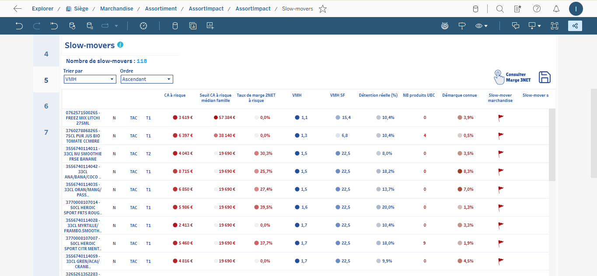
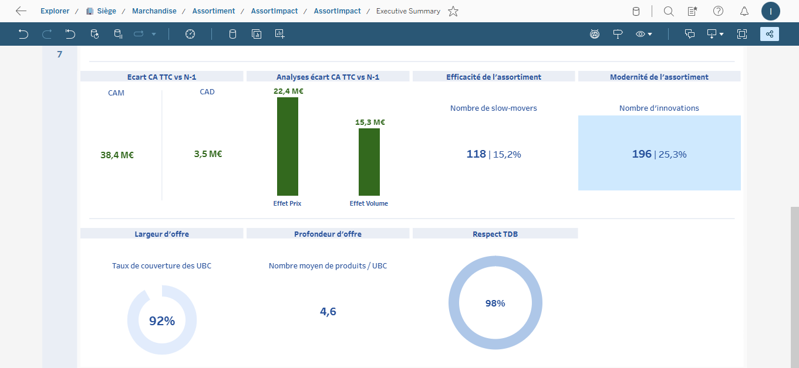

Freelance Digital Builder | Tunisienne basée à Paris
From data to decisions, I build smart learning ecosystems, automation workflows, and executive decks.
J'aide les équipes à transformer des besoins complexes en expériences claires, premium et actionnables. I build Google Sites academies, Apps Script automations, and business storytelling decks with measurable business impact.
Built from real work in this workspace (no sensitive information exposed).
Google Sites
Google Sites LMS - Carrefour Learning
Structured learning ecosystem with embedded pages, parcours navigation, module resources, and practical use-case content for enterprise training. Demo is confidential, so I showcase sanitized screenshots and technical excerpts.
Google SitesHTML/CSSLMS Design
Automation
Apps Script Certification & Progress Automation
Full automation pipeline from quiz submission to progression updates and certificate generation (Sheets + Slides + Drive + Gmail).
Apps ScriptGoogle WorkspaceCertification Engine
Assessment Design
Fil Rouge Missions - Adaptive Assessment by Persona
Designed a new way of assessment: scenario-based missions where context, prompts, and decisions adapt to the user's selected business perimeter.
Assessment UXAdaptive LogicBusiness Simulation
Slide Deck
CUPRA Storytelling Deck
Strategic marketing deck created solo for an academic project, combining storytelling, brand voice, and decision-oriented structure.
A curated gallery of additional decks: finance project, business analysis narratives, and visual concepts built for impact.
Google SlidesData StorytellingWriting Quality
Visual Design
AG Phone - Business Card Design
Minimal dark-theme business card designed for a local phone shop in Tunis. Custom AG monogram logo, clean typographic hierarchy, print-ready layout.
Brand IdentityPrint DesignLogo Design
Technical Proof
No sensitive data, only sanitized architecture and code patterns.
Google Form Submit→onFormSubmit(e)→QUIZ_ATTEMPTS→MODULE/PARCOURS_PROGRESS→PDF Certificate (Slides)→Drive + Email Delivery
google-sites-lms/scripts/rebuild_optim_slides.py
def delete_all_slides(prs: Presentation) -> None:
slide_ids = list(prs.slides._sldIdLst)
for slide_id in slide_ids:
rel_id = slide_id.rId
prs.part.drop_rel(rel_id)
prs.slides._sldIdLst.remove(slide_id)
TAN/TAR/update_portfolio.py
for var_name, filename in templates.items():
with open(f"{template_dir}\\{filename}", 'r', encoding='utf-8') as f:
html = f.read()
html_escaped = html.replace('\\', '\\\\').replace('`', '\\`')
js_vars += f"const TMPL_{var_name} = `{html_escaped}`;\n"
Apps Script Trigger
function onFormSubmit(e) {
const payload = normalizeSubmission(e);
appendQuizAttempt(payload);
upsertModuleProgress(payload);
upsertParcoursProgress(payload);
if (isEligibleForCertificate(payload.userEmail)) {
generateCertificatePdf(payload.userEmail);
}
}
Google Sites Evidence
Sanitized screenshots
The workspace includes screenshot pipelines in template assets (use-cases and captures). For client-facing confidentiality, visuals are exported with sensitive areas blurred.
Fil Rouge Innovation
New assessment design approach
Scenario-driven missions adapt to selected business perimeter and user intent, transforming passive quizzes into context-aware decision assessment.
Accueil Google Sites
Page d'accueil de la plateforme de formation Carrefour avec le CTA Découvrir les parcours.
Catalogue des parcours
Vue catalogue des parcours ABG, Assort'impact et Store Adaptor.
Parcours ABG

Parcours ABG avec le point d'entrée vers l'environnement de formation et les modules.
Parcours Assort'impact

Parcours Assort'impact avec les supports de formation et les cas d'usage business.
Services
Built for corporate teams, startups, agencies, and training organizations.
Google Sites Learning Platforms
From architecture to polished pages: parcours, modules, navigation, and content design ready for real learners.
Apps Script Automation
Automate repetitive operations and connect Google Workspace tools with robust script logic and clear governance.
Executive Decks & Narrative Writing
Clear story arcs, premium visual polish, and strong writing in multilingual contexts for strategic presentations.
Experience Snapshot
Selected highlights from my CV aligned with freelance value.
Current Role
Carrefour - Assistant Project Manager Intern
Designed an internal training tool via Google Sites and Google Workspace, automated task flows, and contributed to faster delivery quality through data and AI-assisted workflows.
Massy, FranceGoogle WorkspaceAutomation
Education
MI1 Master in Data & Finance (double degree)
Albert School Paris + Ecole des Mines Paris (PSL), with focus on data analysis, SQL, machine learning, business intelligence, and strategic marketing.
DataFinanceBusiness Strategy
Previous Roles
Support, Marketing, and Client Operations
Professional experience across technical support, marketing communication, multilingual content, and customer operations in Tunisia and Europe.
UPSMHTRADSB2B/B2C Ops
Skills
Technical + Communication Edge
Analysis (Python, SQL, Excel), digital marketing (SEO/SEM/Analytics), presentation writing, and high-clarity communication for stakeholders.
PythonSQLSlides Storytelling
Freelance Offers
Starter / Pro / Custom
Starter
From EUR 290
1 focused deliverable (page, script, or mini deck)
I am ISLAM MKAOUAR, Tunisian and based in Paris. I combine product thinking, automation, and visual communication. Je suis rapide, orientee resultat, et j'apprends tres vite. My style is premium but human: I turn complex needs into simple systems and consistently go beyond expectations by designing not only what clients ask for, but also what they will need next.
Ready to launch your next project?
Besoin d'un workspace Google Sites, d'une automatisation Apps Script, ou d'un deck stratégique? Let's build it together.